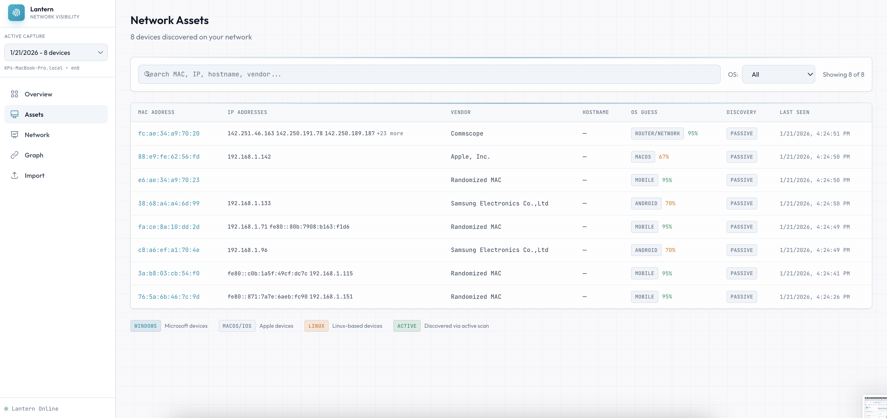
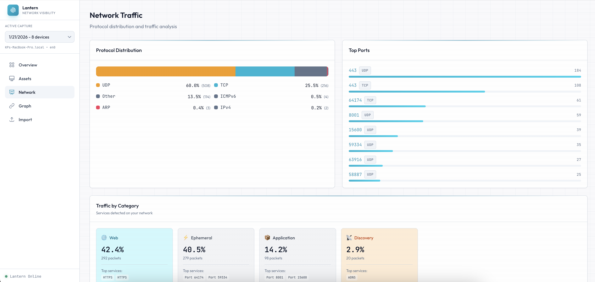
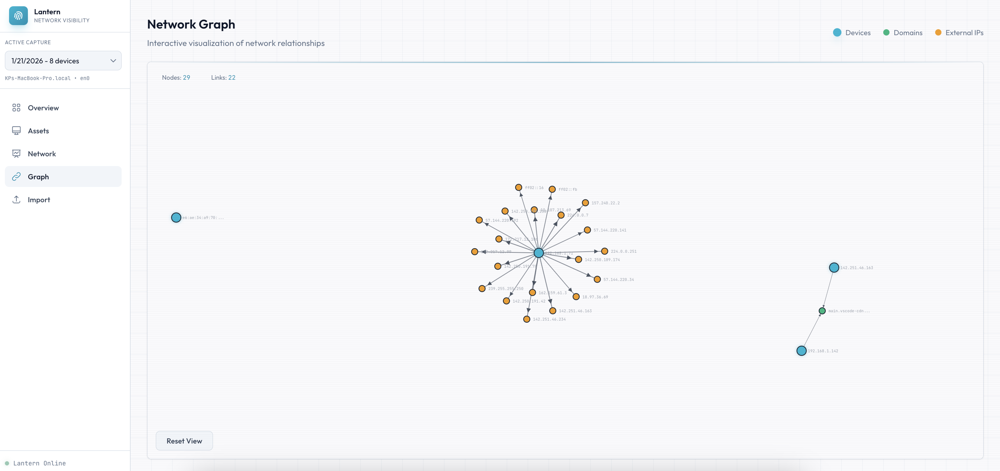

Lantern: A Practical Lens Into Your Local Network
Lantern is an open-source project I built to help me better understand what's happening on my local network. It focuses on discovering connected devices, fingerprinting operating systems, and visualizing traffic patterns in a way that's practical and approachable.
Why I Built Lantern
I built Lantern because I realized how little visibility I had into my own home network.
Between laptops, phones, smart TVs, cameras, and IoT devices, my Wi-Fi had quietly turned into a small ecosystem. Most of the time it worked fine, so I didn't think much about it. But whenever something felt slow, unstable, or unfamiliar, I had no easy way to see what was really happening.
My router showed a basic device list. Packet analyzers showed too much.
I wanted something in between.
I wanted to know which devices were active, what they were talking to, and whether anything unexpected was showing up—without digging through raw packets.
Lantern started as a way for me to understand my own home network better. The goal was simple: make everyday networks visible in a way that actually makes sense.

Figure 1: Dashboard - The Network Overview page showing traffic categories, protocol distribution, top talkers, and device fingerprints.
What I Wanted From It
When I started working on Lantern, I wasn't trying to build a full intrusion detection system or replace enterprise platforms. I wanted a tool that was:
- Fast to run with minimal setup
- Honest about uncertainty (especially with OS fingerprinting)
- Useful out of the box
- Visual and intuitive
- Focused on real-world learning and investigation
Most importantly, I wanted something I'd actually enjoy using when I needed quick visibility.
How Lantern Is Structured
Lantern is built around two main components:
1. A command-line sensor written in Go that captures and summarizes network traffic.
2. A web-based dashboard built with Next.js that visualizes the results.
The sensor handles data collection. The dashboard handles exploration. This separation keeps the capture layer lightweight and makes it easier to improve the UI independently.
The Sensor
The Lantern sensor listens on a selected network interface and captures traffic using libpcap and gopacket. From there, it tries to answer two core questions:
Who is on the network?
What are they doing?
It uses naturally occurring network signals to build its picture, including:
- ARP and DHCP for device discovery
- mDNS, LLMNR, and NBNS for OS fingerprinting hints
- MAC vendor lookups via OUI databases
- Protocol and port summaries
- Optional ARP sweeps for active discovery
Rather than storing massive packet captures, Lantern produces structured JSON summaries that focus on what's most useful for analysis.

Figure 2: Dashboard - The device inventory showing MAC addresses, IPs, vendors, OS fingerprints, and discovery sources.
The Dashboard
The dashboard is where Lantern becomes most useful. After loading a summary file, I can immediately browse connected devices, filter by vendor or operating system, and inspect traffic patterns.
Instead of jumping between tools, everything lives in one place.

Figure 3: Dashboard - Traffic analysis view showing protocol breakdowns, top ports, and service categorization.
One of the features I use most is the relationship graph. Tables are great for detail, but graphs are better at showing structure.
They make it easy to see:
- Which device acts as a central hub
- Which hosts generate the most traffic
- Which devices communicate externally
- Where unusual patterns might exist

Figure 4: Dashboard - Interactive network graph showing device relationships and external connections.
How I Use It in Practice
In practice, I use Lantern for:
- Quickly auditing what's connected to a network
- Creating baselines for "normal" behavior
- Investigating unknown devices
- Learning how different operating systems behave on LANs
- Visualizing IoT and smart device communication
It's especially useful when I want visibility without spinning up heavyweight monitoring infrastructure.
Conclusion
Lantern is my lightweight way of understanding local networks.
It combines device discovery, traffic summaries, and relationship visualization into a single workflow that's easy to run and easy to reason about. It's not meant to replace enterprise tools, but it's been genuinely useful for learning, troubleshooting, and quick security visibility.